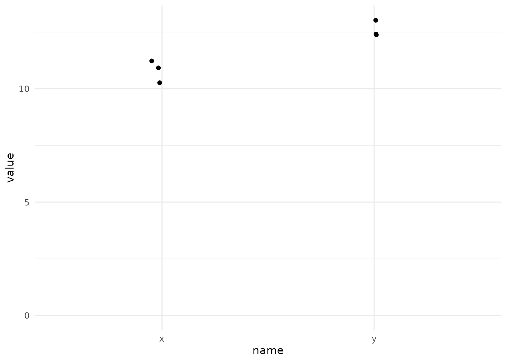

Lesson 4 Stats time!
… the ultimate guide to choosing a hypothesis test.
- with some recap and new tests
4.5 Compare two distributions (outcome: continuous gaussian)
4.5.1 Unpaired t-test
t_example <- tibble(
x = rnorm(3, 10),
y = rnorm(3, 14)
) %>%
pivot_longer(x:y)
t_example %>%
ggplot(aes(name, value)) +
geom_jitter(width = 0.05) +
expand_limits(y = 0)
t.test(value ~ name, data = t_example, var.equal = TRUE)
Two Sample t-test
data: value by name
t = -4.1671, df = 4, p-value = 0.01406
alternative hypothesis: true difference in means is not equal to 0
95 percent confidence interval:
-7.308475 -1.463702
sample estimates:
mean in group x mean in group y
9.335838 13.721927
Call:
lm(formula = value ~ name, data = t_example)
Residuals:
1 2 3 4 5 6
0.9102 1.3806 -1.2111 -1.5277 0.3009 0.1471
Coefficients:
Estimate Std. Error t value Pr(>|t|)
(Intercept) 9.3358 0.7443 12.544 0.000232 ***
namey 4.3861 1.0526 4.167 0.014065 *
---
Signif. codes: 0 '***' 0.001 '**' 0.01 '*' 0.05 '.' 0.1 ' ' 1
Residual standard error: 1.289 on 4 degrees of freedom
Multiple R-squared: 0.8128, Adjusted R-squared: 0.766
F-statistic: 17.36 on 1 and 4 DF, p-value: 0.014064.6 Compare multiple distributions (outcome: continuous gaussian)
4.6.3 Comparison to (multiple) linear regression

https://scientificallysound.org/2017/06/08/t-test-as-linear-models-r/